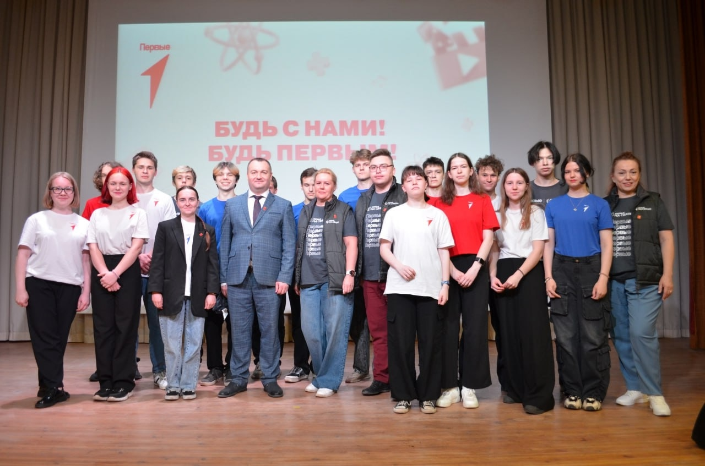
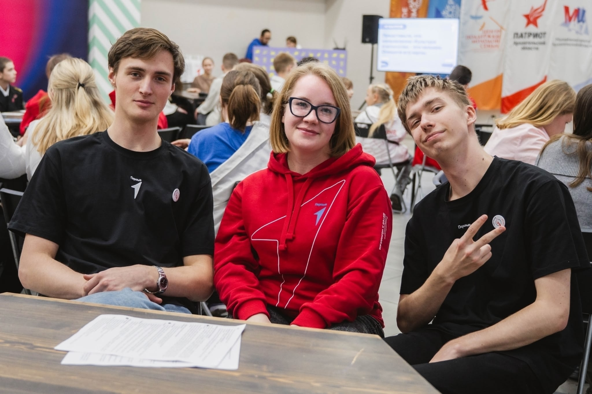
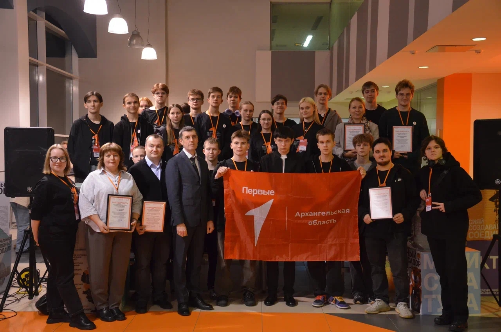
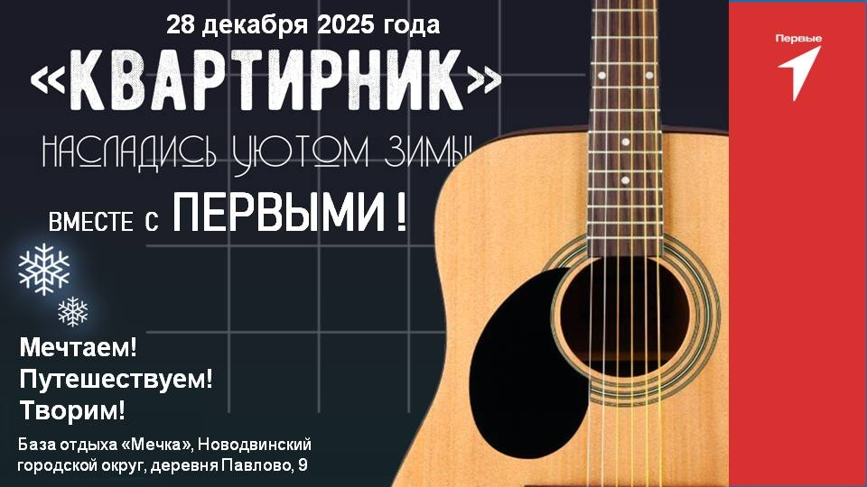
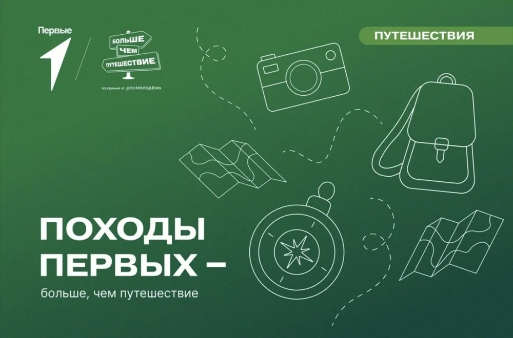
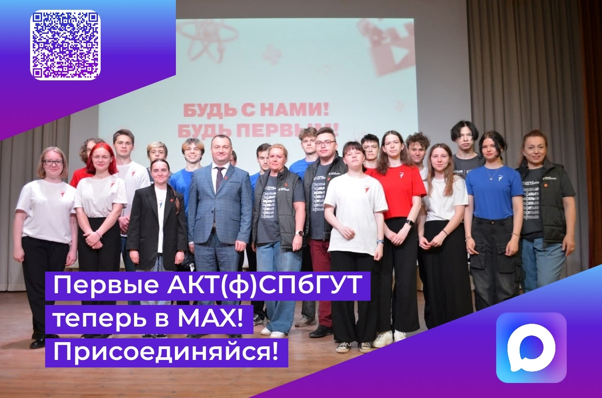

Первые на связи!

🏆 Победители конкурса первичных отделений 2025!
Реализуем идеи!

Общее дело - общая Победа Первых!⭐
Достижения Первых АКТ(ф)СПбГУТ

III Межрегиональный молодёжный фестиваль «Первые на связи! Киберзщитники»
Гранты Движения Первых

🌟 ПЕРВЫЕ НА СВЯЗИ: «КВАРТИРНИК: насладись уютом зимы!»
🎄Предновогодние дни – время волшебства, теплых встреч и, конечно же, вдохновляющих историй! Наше первичное отделение не стало исключением.

🌏 Маршруты Первых, Походв Первых
Подведены итоги регионального конкурса по созданию туристических маршрутов. Участники вложили в свои проекты идеи, знания, любовь к родному краю и стремление открыть Архангельскую область с новых сторон.

Первые в MAX!🔥
Быть первыми – значит не бояться нового, пробовать, задавать тренды и уверенно идти вперед✨